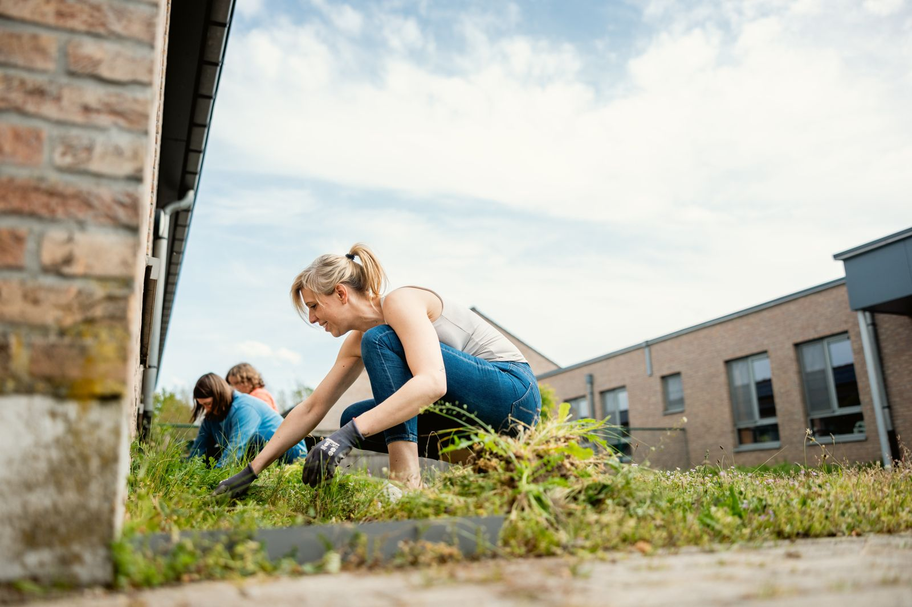
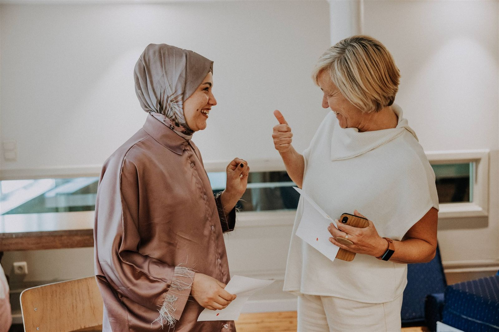
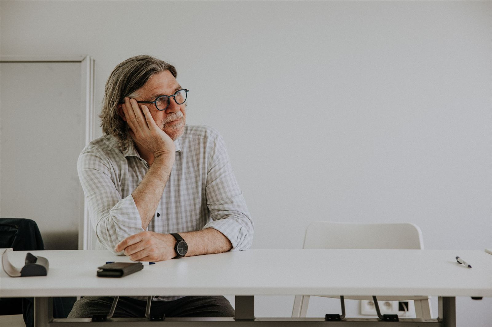
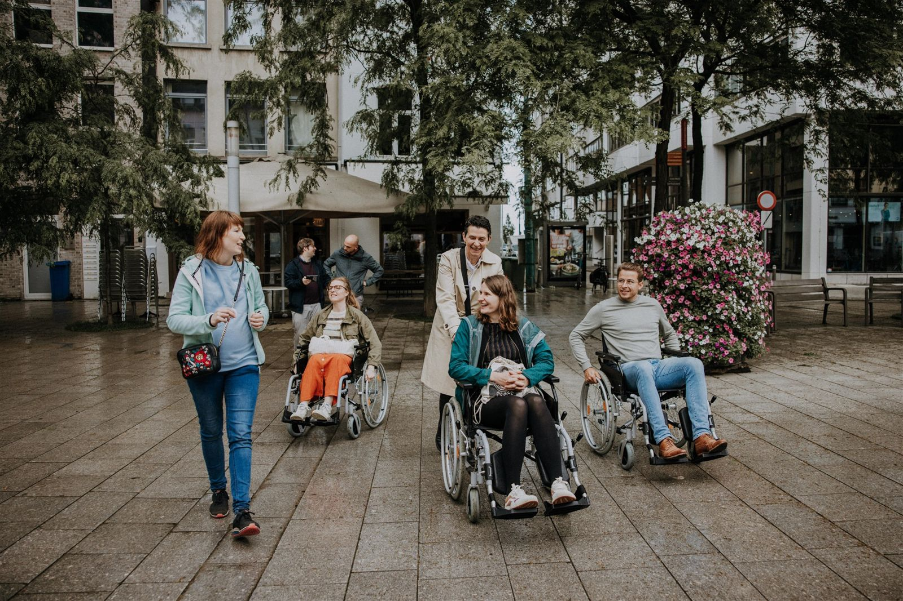
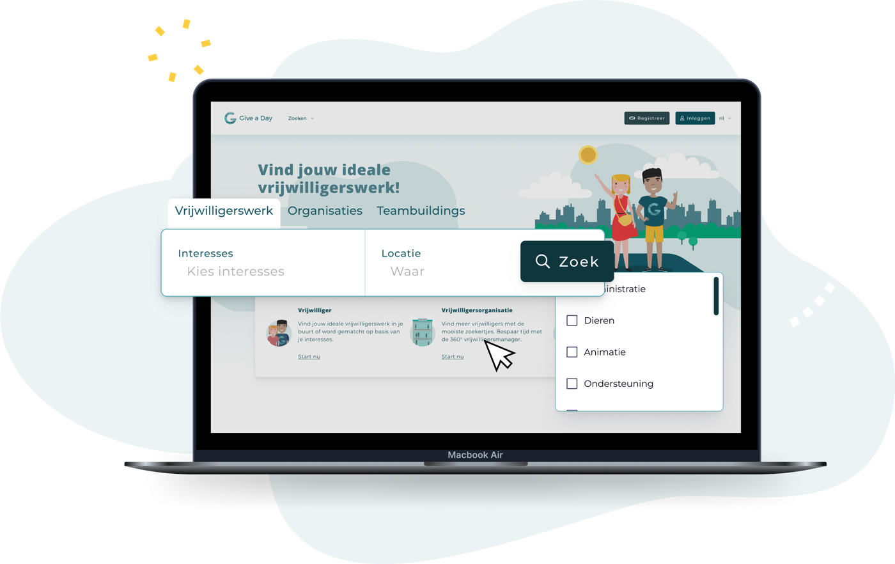
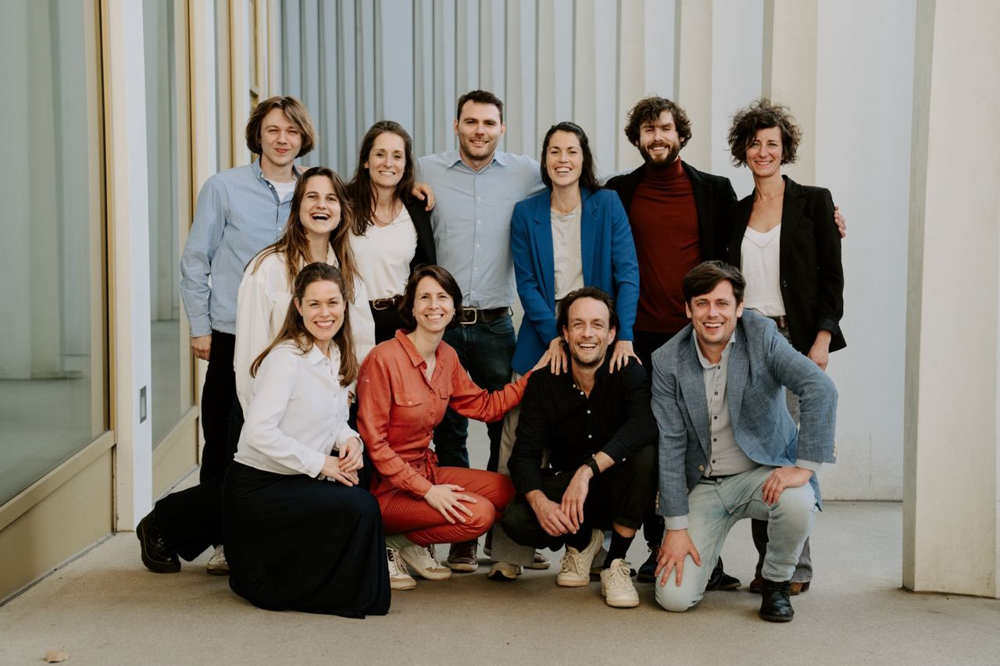

BNP Paribas Fortis
2.080 kg
zwerfvuil
zwerfvuil
Tijdens de Clean-Up Weeks trokken 681 collega's de straat op in 10 Belgische steden. Wij regelden de routes, het materiaal en de opwarmquiz. Zij zorgden voor propere straten.
Sociale teambuildings en bedrijfsvrijwilligerswerk op maat, waar collega's bijdragen aan echte uitdagingen bij non-profitorganisaties. Omdat betekenisvolle ervaringen teams versterken.
Een sociale teambuilding combineert plezier en maatschappelijke impact. Samen met je team, van 10 tot 1000 personen, steek je een halve of hele dag de handen uit de mouwen bij een goed doel.
Werk aan thema's zoals milieu, zorg, ouderen of vluchtelingen, ondersteun kwetsbare groepen of zet je professionele skills in. Zo versterk je niet alleen je team, maar ook lokale vrijwilligersorganisaties en goede doelen.


Kies een thema dat bij je bedrijf past: van natuur en zorg tot onderwijs of je eigen expertise.
Wij regelen de perfecte vrijwilligersactiviteit bij een non-profit uit ons netwerk, volledig op maat van je team.
Jullie maken impact en gaan naar huis met een warm gevoel. Wij zorgen dat alles vlot verloopt.
Samen met de goede doelen definieerden we twaalf werken met de meest voorkomende noden aan helpende handen en hersenen. Elk werk draagt bij aan de Duurzame Ontwikkelingsdoelstellingen (SDG's) van de Verenigde Naties. Klik op een werk voor meer uitleg en voorbeelden.
Samen iets goeds doen, schept een band.
Een bedrijf met een sociaal hart trekt talent aan.
Geen vage beloftes, maar échte impact.
Vrijwilligerswerk boost motivatie en welzijn.


Tijdens de Clean-Up Weeks trokken 681 collega's de straat op in 10 Belgische steden. Wij regelden de routes, het materiaal en de opwarmquiz. Zij zorgden voor propere straten.
Scheidingswanden voor drie studio's, een nieuwe fietsenstalling, maaltijden voor mensen in nood en een hoop klusjes. Alles op één ochtend, met materiaal geschonken door Etex.
Een internationaal J&J-team, kinderen van een Freinetschool en bewoners van een woonzorgcentrum in Turnhout: een voormiddag vol gesprekken en frisse lucht. Sindsdien bouwen we samen de J&J Care Community in België uit.
Een ongelooflijk impactvolle ervaring, die tegelijk de ogen opende en intens was.
Deelnemer impactdag 2025Fijn contact met doelgroepen waar we normaal nooit mee in aanraking komen.
Deelnemer impactdag 2025Heel goed georganiseerd. We leerden de mensen echt kennen en voelden de impact van het samen doen.
Deelnemer impactdag 2025
Betrek je medewerkers het hele jaar rond sociale impact met een platform op maat van je bedrijf. Bouw je eigen ecosysteem van impact, partners en collega's, en connecteer met het grootste non-profitnetwerk van België.
Vraag een demo →Een verhelderende gids die je stap voor stap toont hoe je zelf een sociale teambuilding opzet: van themakeuze tot de dag zelf.
Download nu →
Give a Day verbindt mensen, bedrijven en scholen met lokale non-profitorganisaties. Via ons platform brengen we vrijwilligers samen met meer dan 12.000 partners om een positieve impact te maken.
Onze missie? Zo veel mogelijk mensen inspireren om zich in te zetten voor een betere wereld. Doe mee en organiseer een sociale teambuilding die niet alleen je team versterkt, maar ook de samenleving.
Een aantal van onze trotse partners
Vertel ons over je team en je thema. Wij regelen de perfecte activiteit en jullie gaan naar huis met een warm gevoel.
Start vandaag →Vertel ons kort iets over je team en wat je voor ogen hebt. We nemen snel contact op met een voorstel op maat.